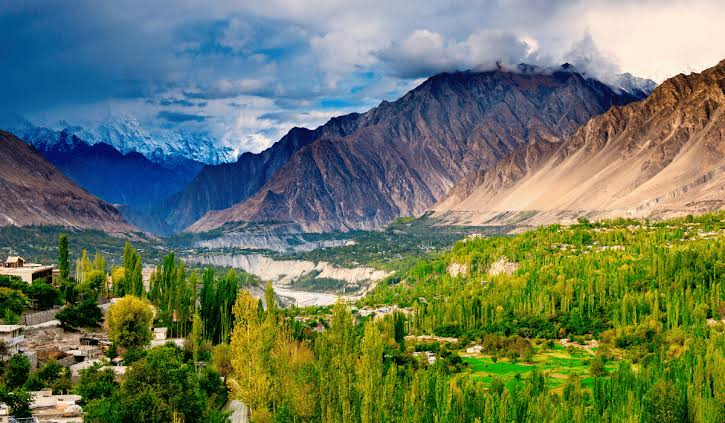
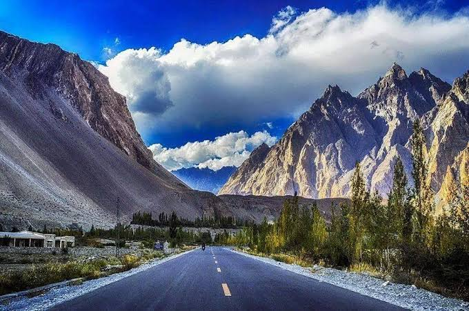
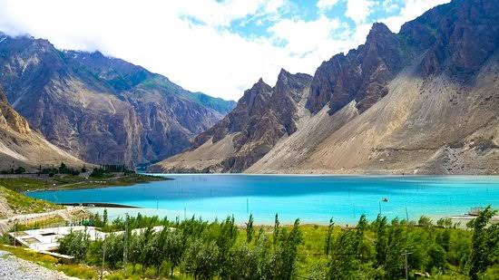
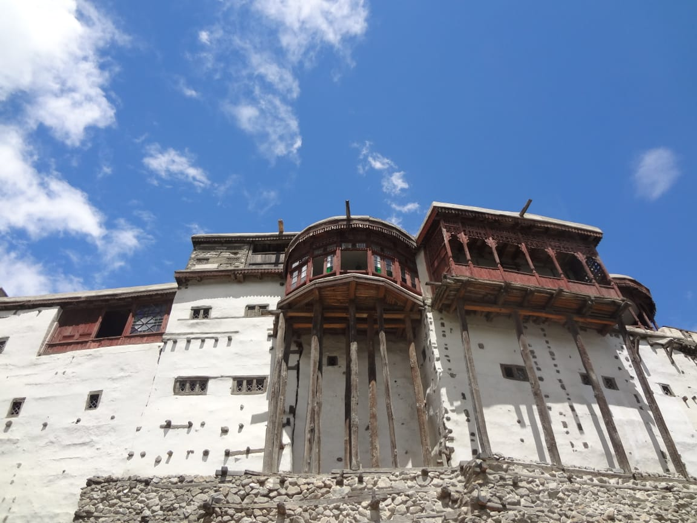

Introduction
My journey to Hunza begins...
Starting my journey in Hunza felt like the beginning of an amazing adventure. Traveling along the Karakoram Highway, exploring Baltit Fort, and enjoying the beauty of Attabad Lake brought immense joy. It was a trip filled with unforgettable moments and stunning views.
Day 1 - Exploring Karakoram Highway
Setting out on the incredible Karakoram Highway was like entering a dream amidst stunning mountains. The twisting roads revealed amazing views—snowy mountain tops and deep valleys at every corner. The air was fresh and pure, filled with our excitement. It was a day of incredible scenery, and the Karakoram Highway truly captured the spirit of adventure..
Day 2 - Baltit Fort and Attabad Lake
Visiting Baltit Fort felt like stepping back in time with its ancient charm and rich history. At Attabad Lake, surrounded by striking blue waters and mountains, joy seemed to overflow. The experience was a delightful blend of cultural discovery and nature's beauty, making it a day to remember..
 